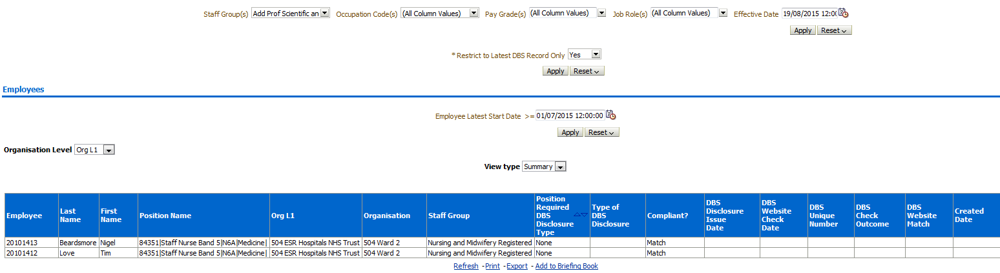
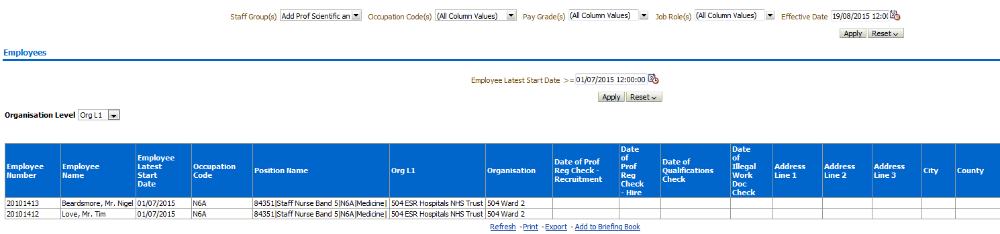
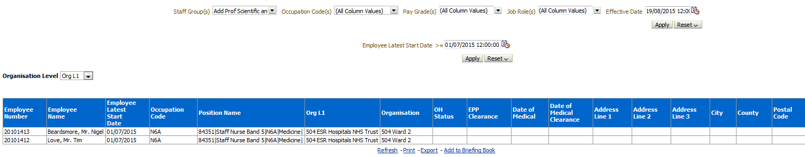
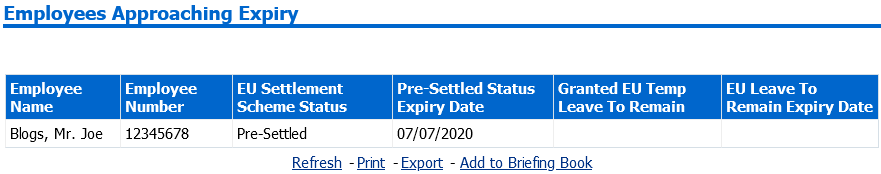
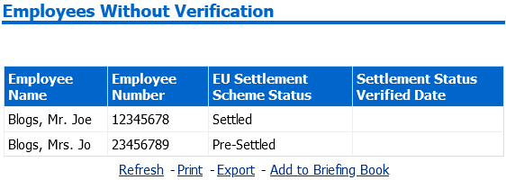
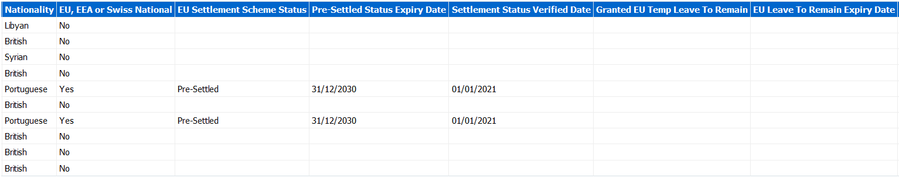
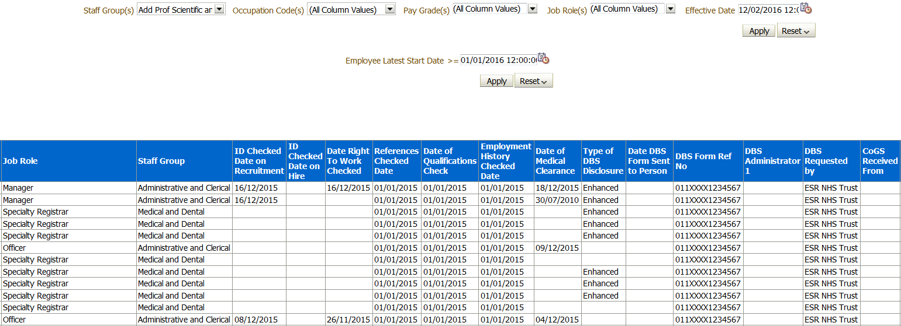
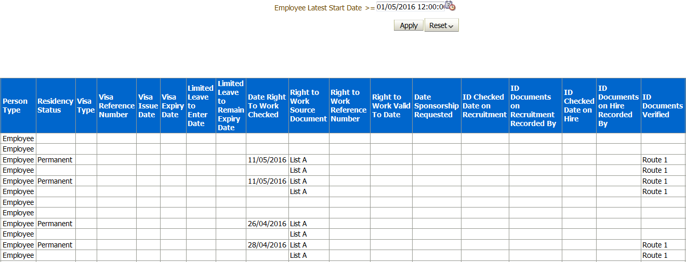
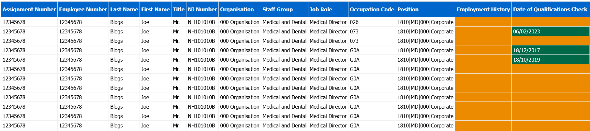
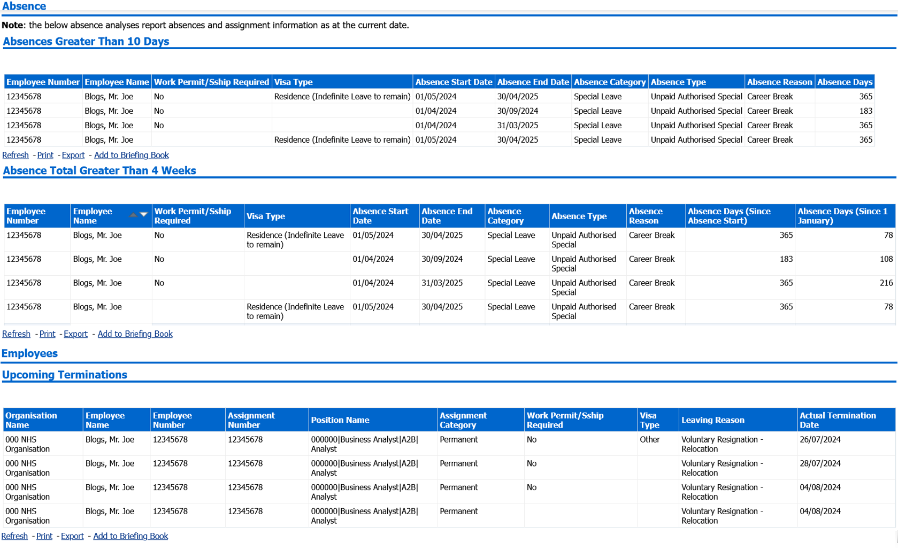

Employment Checklist Dashboard
Description
This dashboard is designed to provide information based on the Employment Checklist data held by ESR. It replicates the Employment Checklist Workbook available through Discoverer reporting and returns data for employees and applicants.
This includes the following Dashboard Pages:
-
DBS
-
Professional Registrations, Qualifications and Illegal Working Checklist
-
Medical
Allocation
This dashboard is available to the following URPs:
XXX BI Administration
XXX HR Administration
XXX HR Administration (With RA)
XXX HR Management
XXX Recruitment & Applicant Enrolment Administration
XXX Recruitment & Applicant Enrolment Administration (with RA)
Prompts
Staff Group
Occupation Code
Pay Grade
Job Role
Person type
Employee person type
Assignment category
Assignment status
Organisation
Effective Date
DBS Tab
Prompts
Restrict to Latest DBS Record Only (default: Yes)
Employee Latest Start Date (Employees Only)
* Source Document (Employees Only)
Applicant Status Start Date (Applicants Only)
Status (default: Offer Accepted) (Applicants Only)
DBS Employees/Applicants
Description
These analyses are designed to show a detail view of the DBS information entered into ESR for both Applicants and Employees.
View Selectors
View Type (Summary or Detail)
Data Items
| Employee/Applicant Number | Last Name |
|---|---|
| First Name | Org Level 1-13 |
| Organisation | Cost Centre |
| Position Required DBS Disclosure Type | Staff Group |
| Compliant? | Type of DBS Disclosure |
| DBS Website Check Date | DBS Disclosure Issue Date |
| DBS Check Outcome | DBS Unique Number |
| Created Date | DBS Website Match |
| Pay Scale (Emp Only) | Permission to Check DBS Status |
| Job Role | Created By |
| Position Number | Staff Group |
| Position Title | Date DBS Form Sent to Person |
| Occupation Code | FTE |
| Area of Work | DBS Administrator 1 |
| DBS Form Ref Number | CoGS Received From |
| DBS Requested By | ID Documents Verified |
| Date DBS Form Returned | DBS Administrator 2 |
| DBS Form Correct | Date DBS/CoGS Received |
| Date DBS/CoGS Requested | Fast Track POCA Requested |
| Children’s Barred List Check Required | Adults Barred List Check Required |
| Fast Track POCA Received | Adults First Received |
| Adults First Requested | Address Line 1 |
| Assignment Status (Emp Only) | Address Line 2 |
| Assignment End Date (Emp Only) | Address Line 3 |
| Employee Latest Start Date (Emp Only) | City |
| Assignment Start Date (Emp Only) | Region |
| Assignment Number | Post Code |
| Assignment Category | Mobile Phone |
| Bank Post Held |
Example Screenshot

Prof Reg, Qual, Illegal Working Tab
Prompts
* Restrict to Latest Employment Checklist Record Only (Employees Only - Default: Yes)
Employee Latest Start Date (Employees only)
* Source Document (Employees only)
Applicant Status Start Date (Applicants only)
Status (Applicants only)
Prof Reg, Qual, Illegal Working Employees/Applicants
Description
These analyses are designed to show a detail view of the Professional Registration, Qualifications and Illegal Working Checklist information entered into ESR for both Applicants and Employees.
Data Items
| Employee/Applicant Number | Org Level 1-13 |
|---|---|
| Employee Latest Start Date (Emp Only) | Date of Prof Reg Check – Recruitment |
| Status Start Date (App Only) | Date of Qualifications Check |
| Organisation Name | Address Line 1 |
| Date of Prof Reg Check – Hire | Address Line 2 |
| Date of Illegal Working Doc Check | Address Line 3 |
| Visa Type | City |
| Visa Reference Number | County |
| Visa Issue Date | Post Code |
| Visa Expiry Date | Mobile Phone |
| Sponsorship Required | |
| Employee/Applicant Name | Occupation Code |
| Applicant Status (App Only) | Position Title |
| Position Number | Area of Work |
| Assignment Number (Emp Only) | Assignment Category (Emp Only) |
| FTE (Emp Only) | Assignment End Date (Emp Only) |
| Assignment Start Date (Emp Only) | Nationality (Emp Only) |
| Assignment Status (Emp Only) | Residency Status |
| Contract Hours |
Example Screenshot

Medical Tab
Prompts
* Restrict to Latest Employment Checklist Record Only (Employees Only - Default: Yes)
Employee Latest Start Date (Employees only)
* Source Document (Employees only)
Applicant Status Start Date (Applicants only)
Status (Applicants only)
Medical Employees/Applicants
Description
This analysis is designed to show a detail view of the Medical information entered into ESR for both Employees and Applicants.
Data Items
| Employee/Applicant Number | Employee/Applicant Name |
|---|---|
| Employee Latest Start Date (Emp Only) | Occupation Code |
| Org Level 1-13 | OH Status |
| Organisation Name | Date of Medical |
| EPP Clearance | Address Line 1 |
| Date of Medical Clearance | Address Line 2 |
| Position Number | Address Line 3 |
| Position Title | City |
| Area of Work | County |
| FTE (Emp Only) | Postal Code |
| Assignment Number (Emp Only) | Mobile Phone |
| Assignment Category (Emp Only) | |
| Application Status (App Only) | Assignment Status (Emp Only) |
| Assignment Start Date (Emp Only) | Assignment End Date (Emp Only) |
| OH Review Date | OH Record Date |
| Assessment Type |
Example Screenshot

EU Status Tab
Prompts
Employee Latest Start Date (Employees only)
Applicant Status Start Date (Applicants only)
Status (Applicants only)
Number of Days to Expiry Date
Restrict to EU, EEA and Swiss Nationals (excl. Irish)
Employees/Applicants Approaching Expiry
Description
These analyses are designed to show details of EU settlement scheme status approaching expiry for both Employees and Applicants.
Data Items
| Employees/Applicant Name | Pre-Settled Status Expiry Date |
|---|---|
| Employees/Applicant Number | Granted EU Temp Leave To Remain |
| EU Settlement Scheme Status | EU Leave To Remain Expiry Date |
Example Screenshot

Employees/Applicants Without Verification
Description
These analyses are designed to show details of EU settlement scheme status verification for both Employees and Applicants.
Data Items
| Employees/Applicant Name | EU Settlement Scheme Status |
|---|---|
| Employees/Applicant Number | Settlement Status Verified date |
Example Screenshot

Detail
Description
These analyses are designed to show full EU Status details held in ESR for both Employees and Applicants.
Data Items
| Employee Number / Applicant Number | Nationality |
|---|---|
| Employee / Applicant Name | EU, EEA or Swiss National |
| Assignment Number (Employees only) | EU Settlement Scheme Status |
| Employee Latest Start Date (Employees only) | Pre-Settled Status Expiry Date |
| Position Number | Settlement Status Verified Date |
| Position Title | Granted EU Temp Leave To Remain |
| Occupation Code | EU Leave To Remain Expiry Date |
| Area Of Work | Date Settlement Status Issued |
| Main Staff Group | Created By |
| Organisation | Created Date |
| Organisation Level 1-13 | Last Updated By |
| Cost Centre | Last Updated Date |
Column Selectors
Organisation Level 1-13 x 4
Example Screenshot

Checklist Summary Tab
Description
This page of the dashboard is designed to show details of the Employment Checklist (Employees and Applicants) including dates and statuses of References, Right to Work checks and Disclosure and Barring Service (DBS).
Prompts
* Restrict to Latest Employment Checklist Record Only (Employees Only - Default: Yes)
Employee Latest Start Date (Employees Only)
* Source Document (Employees only)
Applicant Status Start Date (Applicants only)
Status (Applicants Only - Default: Offer Accepted)
Column Selectors
Organisation Level 1-13 x 4
Data Items
| Employee Number / Applicant Number | Assignment Number |
|---|---|
| Employee / Applicant Name | NI Number |
| Vacancy Number (Applicants Only) | Position Name |
| Latest Start Date | Organisation |
| Occupation Code | Staff Group |
| Job Role | ID Checked Date on Recruitment |
| Type of DBS Disclosure | References Checked Date |
| ID Checked Date on Hire | Employment History Checked Date |
| Date of Qualifications Check | Date DBS Form Sent to Person |
| Date of Medical Clearance | DBS Disclosure Issue Date |
| Date Right to Work Checked | DBS Administrator 1 |
| DBS Form Ref Number | CoGS Received From |
| DBS Requested By | ID Documents Verified |
| Date DBS Form Returned | DBS Administrator 2 |
| DBS Form Correct | Date DBS/CoGS Received |
| Date DBS/CoGS Requested | Date of Prof Reg Check - Rec |
| Registration Membership Body | DBS Disclosure Issue Date |
| Date of Prof Reg Check - Hire | DBS Website Match |
| Permission to Check DBS Status | DBS Website Check Date |
| Pre-employment Checks Complete | Equality and Diversity Information Updated/Verified |
| Personal Information Updated/Verified | Organisation Level 1-13 |
| IAT Consent | Bank Account Details Reviewed |
| Latest IAT Consent Update | Date of Birth Verified |
Example Screenshot

Checklist Detail Tab
Description
This page of the dashboard provides a detailed report of the Employment Checklist (Employees and Applicants) including Reference details, Visa details, details of Right to Work checks and The Disclosure and Barring Service (DBS).
Prompts
Employee Latest Start Date (Employees Only)
* Source Document (Employees only)
Applicant Status Start Date (Applicants only)
Status (Applicants Only - Default: Offer Accepted)
Column Selectors
Organisation Level 1-13 x 4
Data Items
| Vacancy Name (Applicants Only) | Aplicant Name (Applicants Only) |
|---|---|
| Applicant Number (Applicants Only) | ID Checked Date on Hire |
| Assignment Number | ID Documents on Hire Recorded By |
| Last Name (Employees Only) | ID Documents Verified |
| Middle Name (Employees Only) | Date of Qualifications Check |
| First Name (Employees Only) | Date of Medical Clearance |
| Title (Employees Only) | Employment History Checked Date |
| Nationality | References Checked Date |
| Email Address | Registration Membership Body |
| Telephone | Professional Registration Num |
| NI Number | Registration Expiry Date |
| Latest Start Date | Revalidation Date |
| Position Name | Date of Prof Reg Check – Rec |
| Organisation | Date of Prof Reg Check – Hire |
| Staff Group | Type of DBS Disclosure |
| Occupation Code | Date DBS Form Sent to Person |
| Deanery Post Number | Date DBS Form Sent to Person |
| Person Type | DBS Administrator 1 |
| Residency Status | DBS Disclosure Issue Date |
| Visa Type | DBS Requested by |
| Visa Reference Number | CoGS Received From |
| Visa Issue Date | Date DBS Form Returned |
| Visa Expiry Date | DBS Form Correct |
| Job Role | DBS Administrator 2 |
| Limited Leave to Enter Date | Permission to Check DBS Status |
| Limited Leave to Remain Expiry Date | Date DBS/CoGS Requested |
| Date Right To Work Checked | Date DBS/CoGS Received |
| Right to Work Source Document | DBS Unique Number |
| Right to Work Reference Number | DBS Website Check Date |
| Right to Work Valid To Date | DBS Website Match |
| Date Sponsorship Requested | ID Documents on Recruitment Recorded By |
| Pre-employment Checks Complete | Equality and Diversity Information Updated/Verified |
| Personal Information Updated/Verified | Endorsed Passport Photo on Recr (No Photographic ID) (Employes Only) |
| ID Checked Date on Recruitment | Non-Photo ID 1 on Recr (No Photographic ID) (Employes Only) |
| Endorsed Passport Photo on Hire (No Photographic ID) (Employes Only) | Non-Photo ID 2 on Recr (No Photographic ID) (Employes Only) |
| Non-Photo ID 1 on Hire (No Photographic ID) (Employes Only) | Address Doc 1 on Recr (No Photographic ID) (Employes Only) |
| Non-Photo ID 2 on Hire (No Photographic ID) (Employes Only) | Address Doc 2 on Recr (No Photographic ID) (Employes Only) |
| Address Doc 1 on Hire (No Photographic ID) (Employes Only) | Photo ID 1 on Recr (One Photographic + Two Address) (Employes Only) |
| Address Doc 2 on Hire (No Photographic ID) (Employes Only) | Address Doc 1 on Recr (One Photographic + Two Address) (Employes Only) |
| Photo ID 1 on Hire (One Photographic + Two Address) (Employes Only) | Address Doc 2 on Recr (One Photographic + Two Address) (Employes Only) |
| Address Doc 1 on Hire (One Photographic + Two Address) (Employes Only) | Photo ID 1 on Recr (Two Photographic + One Address) (Employes Only) |
| Address Doc 2 on Hire (One Photographic + Two Address) (Employes Only) | Photo ID 2 on Recr (Two Photographic + One Address) (Employes Only) |
| Photo ID 1 on Hire (Two Photographic + One Address) (Employes Only) | Address Doc 1 on Recr (Two Photographic + One Address) (Employes Only) |
| Photo ID 2 on Hire (Two Photographic + One Address) (Employes Only) | Endorsed Passport Photo on Recr (No Photographic ID) (Employes Only) |
| Address Doc 1 on Hire (Two Photographic + One Address) (Employes Only) | Organisation Level 1-13 |
| IAT Consent | Bank Account Details Reviewed |
| Latest IAT Consent Update | Date of Birth Verified |
| Supervisor Assignment Number (Applicants Only) | Supervisor Name (Applicants Only) |
Example Screenshot

Fit and Proper Person Checks Tab
Description
This page of the dashboard provides a detailed report of the Fit and Proper person employment checks for Director and Board members.
Prompts
Staff Group(s)
Occupation Code(s)
Pay Grade(s)
Job Role(s)
Primary Assignment Only
Person Type
Employee Person Type
Assignment Status
Assignment Category
Organisation
Effective Date
Data Items
| Assignment Number | Open/Upheld Disciplinary Case |
|---|---|
| Employee Number | Open/Upheld Grievance Case |
| Last Name | Social Media Date Checked |
| First Name | Not Disqualified as a Charitable Trustee |
| Title | Not Disqualified from Directors Register |
| NI Number | No Employment Tribunal Judgements Found |
| Organisation | DBS Requirements |
| Staff Group | Date of Medical Clearance |
| Job Role | Not Found on Insolvency Register |
| Occupation Code | Date Prof Reg Check |
| Position | Self Attestation |
| Employment History | Tests Complete/Chair Sign-off |
| Date of Qualifications Check | FPP Clearance Exceptions |
| References Check Date | Settlement Agreements |
| Annual Performance Appraisal Complete |
Example Screenshot

Sponsorship Requirements Tab
Description
This page is designed to help organisations report on the various requirements of sponsored employees. The reports are designed to help organisations identify where they may need to take action in line with the government requirements for sponsor duties and compliance:
Absences Greater than X Days
This report returns continuous absences greater than 10 calendar days.
Data Items
| Employee Number |
|---|
| Employee Name |
| Work Permit/Sship Required |
| Visa Type |
| Absence Start Date |
| Absence End Date |
| Absence Category |
| Absence Type |
| Absence Reason |
| Absence Days |
Filters
Date is equal to / is in Effective Date (Default: Current Date)
AND Absence Date between first day of previous month and current date
AND Include latest employee record where Work Permit/Sponsorship Required is equal to Yes
AND Continuous Absence Days difference between Absence Start Date and Absence End Date is greater than / equal to 10 in the period
Absence Total Greater than 4 Weeks
This report returns employees where the total number of calendar days absent within a calendar year (from 1 January) exceeds 20 days.
Data Items
| Employee Number |
|---|
| Employee Name |
| Work Permit/Sship Required |
| Visa Type |
| Absence Start Date |
| Absence End Date |
| Absence Category |
| Absence Type |
| Absence Reason |
| Absence Days (Since Absence Start) |
| Absence Days (Since 1 January) |
Filters
Date is equal to / is in Effective Date (Default: Current Date)
AND Employee Number is equal to Employee Number returned in sub-analysis returning employees with Absence Days greater than / equal to 20 in the calenda year
AND Include latest employee record where Work Permit/Sponsorship Required is equal to Yes
AND Primary Assignment Flag is equal to / is in Yes
Terminations
This report returns terminating employees in the period.
Data Items
| Organisation Name |
|---|
| Employee Name |
| Employee Number |
| Assignment Number |
| Position Name |
| Assignment Category |
| Work Permit/Sship Required |
| Visa Type |
| Leaving Reason |
| Actual Termination Date |
Filters
Date is equal to / is in Effective Date (Default: Current Date)
AND Actual Termination Date between current date and last day of the third month in the future
AND Include latest employee record where Work Permit/Sponsorship Required is equal to Yes
Workforce Movements
This report returns assignment changes in the period.
Data Items
| Assignment Number | Pay Scale From |
|---|---|
| Employee Name | Pay Scale To |
| Change Reason | Job Role From |
| Incremental Date | Job Role To |
| Change Date | Organisation To |
| FTE From | Organisation From |
| FTE To | Location From |
| Position From | Location To |
| Position To | Visa Type |
| Staff Group From | Work Permit/Sship Required |
| Staff Group To | Last Updated By |
| Grade Step From | Last Updated Date |
| Grade Step To | |
| Assignment Status From | |
| Assignment Status To |
Filters
Date is less than / is equal to Effective Date / Change Date To (Default: Current Date)
AND Date is greater than / is equal to Change Date From (Default: first day of previous month)
AND Assignment Number is equal to Assignment Number returned in sub-analysis returning latest employee record where Work Permit/Sponsorship Required is equal to Yes
Prompts
Organisation(s)
Staff Group(s)
Assignment Category
Assignment Status
Person Type(s)
Employee Person Type(s)
Primary Assignments Only
Occupation Code
Employee Number(s)
Change Reason(s)
Last Updated Date Between
Last Updated By
Change Date From
Change Date To/Effective Date
Visa Type
Actual Termination Date Between
* Absence Type
Absence Category
Absence Reason
Continuous Absence > X Days (Default: 10)
Show Continuous Absences from X Months (Default: 3)
Total Absence Days in Calendar Year >= (Default: 20)
Note: Both authorised and unauthorised unpaid absences are returned by the Absence Type prompt by default however users can amend values in line with reporting requirements.
Example Screenshot
